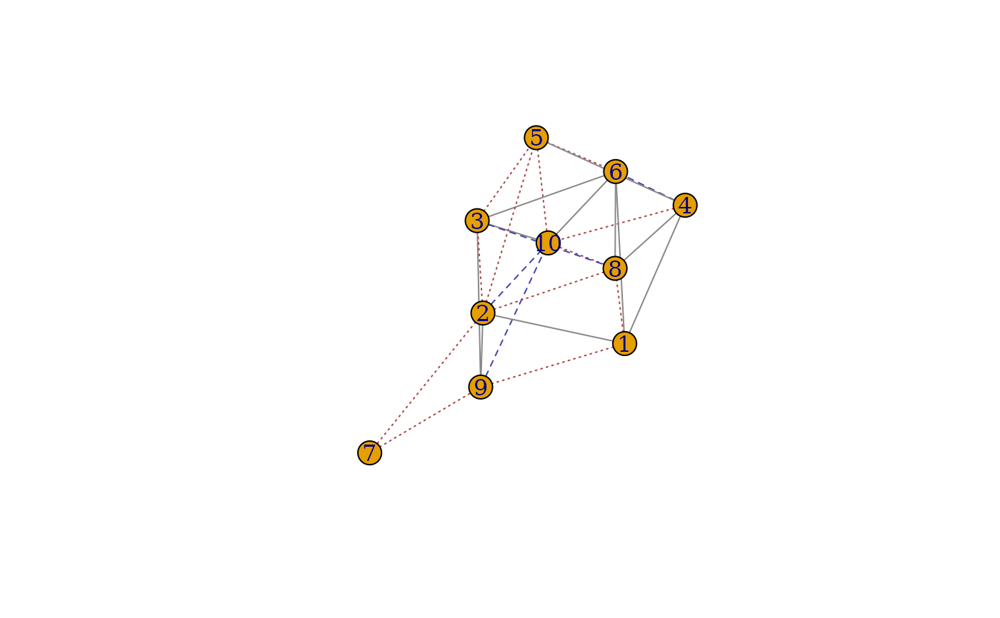
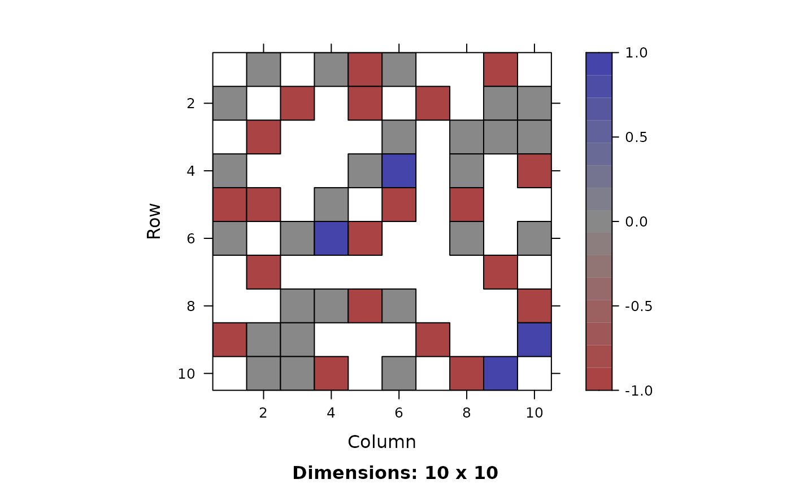

Spectral Graph Matching Methods: IsoRank Algorithm
graph_match_IsoRank(
A,
B,
seeds = NULL,
similarity,
max_iter = 50,
lap_method = "greedy"
)A matrix, igraph object, or list of either.
A matrix, igraph object, or list of either.
A vector of integers or logicals, a matrix or a data frame. If the seed pairs have the same indices in both graphs then seeds can be a vector. If not, seeds must be a matrix or a data frame, with the first column being the indices of \(G_1\) and the second column being the corresponding indices of \(G_2\).
A matrix. An n-by-n matrix containing vertex similarities.
A number. Maximum number of replacing matches.
Choice of method to extract mapping from score matrix. One of "greedy" or "LAP".
graph_match_IsoRank returns an object of class "graphMatch" which is a list
containing the following components:
matching correspondence in \(G_1\)
matching correspondence in \(G_2\)
a vector of logicals indicating if the corresponding vertex is a seed
the functional similarity score matrix obtained from the power method with which one can extract more than one matching candidates
the order of vertices getting matched
Method for extracting node mapping
R. Singh, J. Xu, B. Berger (2008), Global alignment of multiple protein interaction networks with application to functional orthology detection. Proceedings of the National Academy of Science. USA, pages 12763-12768.
cgnp_pair <- sample_correlated_gnp_pair(n = 10, corr = 0.3, p = 0.5)
g1 <- cgnp_pair$graph1
g2 <- cgnp_pair$graph2
# match G_1 & G_2 using IsoRank algorithm
startm <- as.matrix(init_start(start = "bari", nns = 10, soft_seeds = 1:4))
GM_IsoRank <- gm(g1, g2, similarity = startm, method = "IsoRank", lap_method = "greedy")
GM_IsoRank
#> gm(A = g1, B = g2, similarity = startm, method = "IsoRank", lap_method = "greedy")
#>
#> Match (10 x 10):
#> corr_A corr_B
#> 1 1 1
#> 2 2 2
#> 3 3 3
#> 4 4 4
#> 5 5 10
#> 6 6 6
#> 7 7 7
#> 8 8 5
#> 9 9 9
#> 10 10 8
summary(GM_IsoRank, g1, g2, true_label = 1:10)
#> Call: gm(A = g1, B = g2, similarity = startm, method = "IsoRank", lap_method = "greedy")
#>
#> # Matches: 10
#> # True Matches: 7, # Seeds: 0, # Vertices: 10, 10
#>
#> common_edges 13.000000
#> missing_edges 2.000000
#> extra_edges 10.000000
#> fnorm 4.898979
GM_IsoRank[] # get the corresponding permutation matrix
#> 10 x 10 sparse Matrix of class "dgTMatrix"
#>
#> [1,] 1 . . . . . . . . .
#> [2,] . 1 . . . . . . . .
#> [3,] . . 1 . . . . . . .
#> [4,] . . . 1 . . . . . .
#> [5,] . . . . . . . . . 1
#> [6,] . . . . . 1 . . . .
#> [7,] . . . . . . 1 . . .
#> [8,] . . . . 1 . . . . .
#> [9,] . . . . . . . . 1 .
#> [10,] . . . . . . . 1 . .
GM_IsoRank %*% g2 # permute the second graph according to match result: PBP^T
#> IGRAPH 6a3db67 UN-- 10 23 -- Erdos-Renyi (gnp) graph
#> + attr: name_1 (g/c), name_2 (g/c), type_1 (g/c), type_2 (g/c), loops_1
#> | (g/l), loops_2 (g/l), p_1 (g/n), p_2 (g/n), name (g/c), type (g/c),
#> | loops (g/l), p (g/n), name (v/n)
#> + edges from 6a3db67 (vertex names):
#> [1] 7-- 9 6--10 8-- 6 10-- 5 8-- 5 6-- 5 4--10 4-- 8 4-- 5 3-- 9
#> [11] 3-- 8 3-- 6 3-- 5 2--10 2-- 9 2-- 8 2-- 7 2-- 3 1--10 1-- 9
#> [21] 1-- 6 1-- 4 1-- 2
GM_IsoRank %*% g2[] # output permuted matrix
#> 10 x 10 sparse Matrix of class "dgCMatrix"
#>
#> [1,] . 1 . 1 1 1 . . 1 .
#> [2,] 1 . 1 . 1 . 1 . 1 1
#> [3,] . 1 . . . 1 . 1 1 1
#> [4,] 1 . . . 1 . . 1 . 1
#> [5,] 1 1 . 1 . 1 . 1 . .
#> [6,] 1 . 1 . 1 . . 1 . 1
#> [7,] . 1 . . . . . . 1 .
#> [8,] . . 1 1 1 1 . . . 1
#> [9,] 1 1 1 . . . 1 . . .
#> [10,] . 1 1 1 . 1 . 1 . .
# Visualize the edge-wise matching performance
plot(g1, g2, GM_IsoRank)

plot(g1[], g2[], GM_IsoRank)
